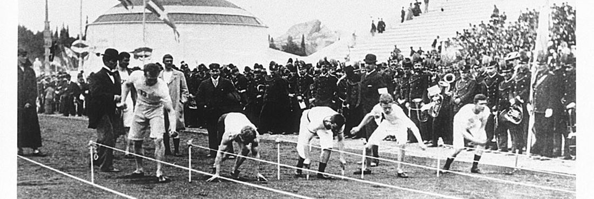

História dos jogos olímpicos
Neste artigo você saberá um pouco mais sobre a história dos jogos olímpicos.
Onde começou, como evoluiu e como é hoje.
Religião e esporte na Grécia Antiga
A prática esportiva, bem como uma série de outras práticas desenvolvidas pelo ser humano,
possuía nas civilizações antigas um fundamento religioso. Os Jogos Olímpicos, hoje em dia
bastante popularizados em razão do resgate que deles foi feito pelo Barão de Coubertin
,
na década de 1890, não fogem à regra. A origem de tais jogos ocorreu na cidade de Olímpia,
uma das cidades-estado da
Grécia Antiga
(ou Hélade), por volta do século VIII a.C.
Na antiga Grécia, quatro grandes festivais religiosos eram celebrados com jogos esportivos:
os Píticos, dedicados ao deus Apolo e realizados no santuário de Delfos; os Ístmicos,
realizados no santuário de Corinto e dedicados ao deus Poseidon; os Nemeus, realizados
em Nemeia, no santuário de Zeus e a ele dedicados; e, por fim, os Olímpicos, que eram
realizados em Olímpia e também dedicados a Zeus.
Para compreendermos bem a relação dos Jogos Olímpicos com Zeus, é necessário fazer
referência a uma parte do mito de Hércules (ou Héracles).
Foto jogos em Atenas (1896)
Culto a Zeus em Olímpia e o mito de Hércules
Hércules, segundo a mitologia grega, é considerado o fundador dos Jogos Olímpicos.
Filho de Zeus com uma mortal, Hércules foi desafiado pela deusa Hera a cumprir doze
trabalhos considerados irrealizáveis. O quinto deses trabalhos consistia em limpar
os currais do rei Áugias, da cidade de Élis. Segundo o mito, os currais eram habitados
por milhares de animais e não era limpo há cerca de 30 anos.
Hércules, após conseguir realizar o penoso trabalho, decidiu comemorar o feito inaugurando
jogos esportivos em homenagem ao seu pai, Zeus. Tais jogos teriam sido realizados pela
primeira vez no santuário de Zeus em Olímpia e, por isso, recebido o nome de “olímpicos”
ou, simplesmente, Olimpíadas. A narrativa mitológica à parte, de fato em Olímpia os
jogos esportivos foram bastante intensos, com periodicidade de quatro anos e por cerca
de cinco séculos.
Vídeo de jogos antigos
Neste vídeo, atletas correm para disputar a medalha, nas Olimpíadas de 2016.
Os próximos jogos
Os próximos jogos estão programados para acontecer em París em 2024.